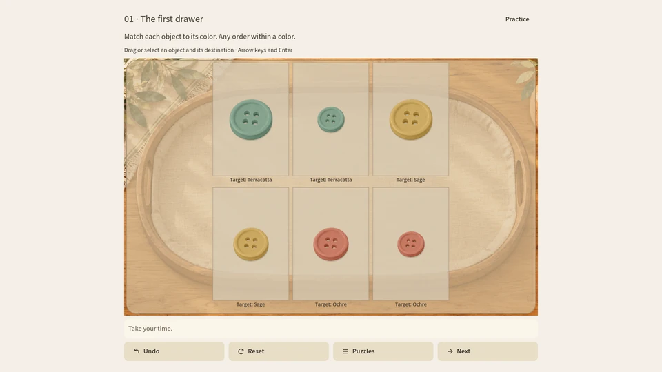
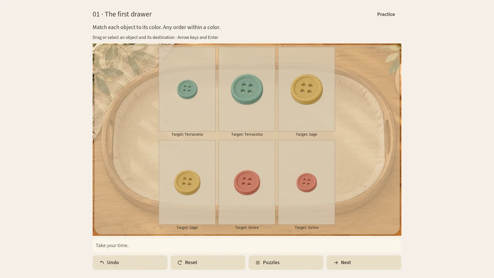
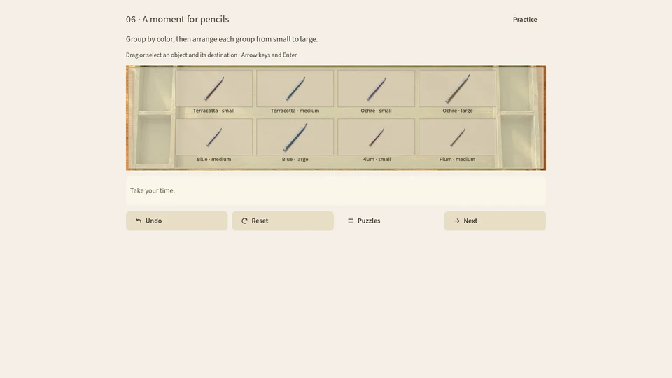
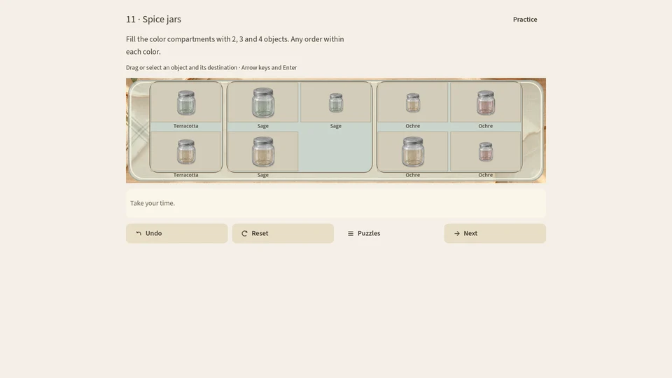
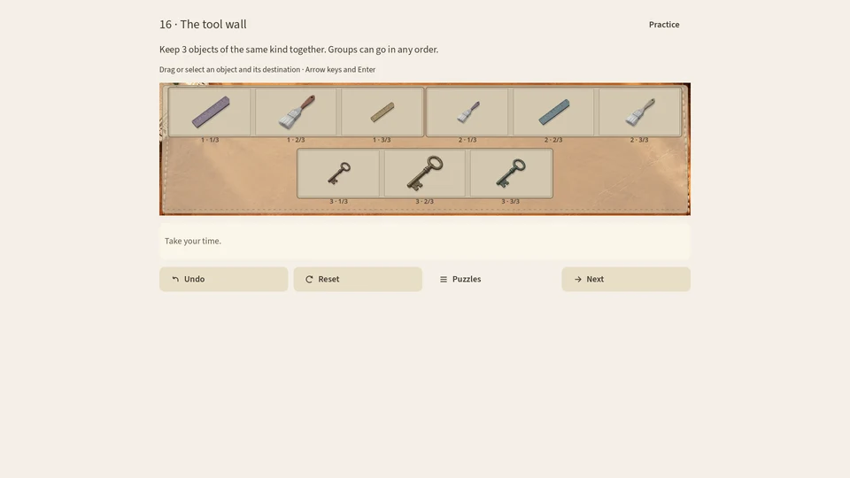
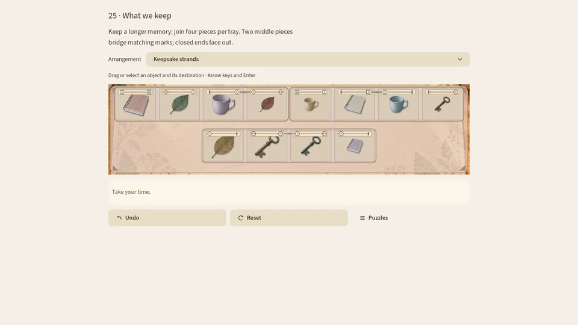

Sichtbare RegelnVisible rules
Jede Aufgabe zeigt dir, worauf es ankommt. Entdecke die Ordnung Schritt für Schritt.Each puzzle shows you what matters. Discover the pattern one step at a time.
Ein Spiel zum DurchatmenA little room to unwind
Ein ruhiges Sortierpuzzle mit 25 Aufgaben in fünf Kapiteln. Ordne kleine Fundstücke, folge sichtbaren Regeln und verbinde passende Fäden – ohne Timer.A calm sorting puzzle with 25 puzzles across five chapters. Arrange little finds, follow visible rules and join matching threads, with no timer.
Das Spiel entdeckenDiscover the gameGeplant: zuerst Windows / Microsoft Store, dann Android / Google Play · Steam späterPlanned: Windows / Microsoft Store first, then Android / Google Play · Steam later

Das SpielThe game
Jede Aufgabe zeigt dir, worauf es ankommt. Entdecke die Ordnung Schritt für Schritt.Each puzzle shows you what matters. Discover the pattern one step at a time.
Manche Aufgaben haben mehrere Lösungen. Mit „Rückgängig“ kannst du jederzeit einen Zug zurücknehmen.Some puzzles have more than one solution. Undo lets you take a move back.
Kein Timer: Nimm dir die Zeit, die du brauchst, und spiele mit Maus oder Touch.There’s no timer. Take your time and play with a mouse or touch.
Fünf Kapitel führen von Knöpfen und Stiften zu Erinnerungsstücken mit passenden Fäden.Five chapters lead from buttons and pencils to keepsakes with matching threads.
EinblickeA closer look
Echte Spielaufnahmen aus allen fünf Kapiteln. Das erste Paar zeigt einen einzelnen Zug, keine fertige Lösung. Die Spieloberfläche ist auf Englisch.Real gameplay from all five chapters. The first pair shows a single move, with more left to solve. Screenshots show the English interface.






FAQ
Geplant ist zuerst Windows im Microsoft Store, danach Android bei Google Play; Steam soll später folgen. Ein Erscheinungsdatum steht noch nicht fest.Windows on Microsoft Store is planned first, followed by Android on Google Play, with Steam later. A release date has not been announced.
Nein. Es gibt keinen Timer. Du kannst in deinem eigenen Tempo spielen und Züge rückgängig machen.No. There is no timer. Play at your own pace and undo moves.
Auf deinem Gerät. Mehr dazu steht in unserer Datenschutzerklärung.On your device. Read more in our privacy policy.
Little Keepings ist in Entwicklung. Mach es dir bis dahin gemütlich.Little Keepings is in development. Until then, make yourself comfortable.